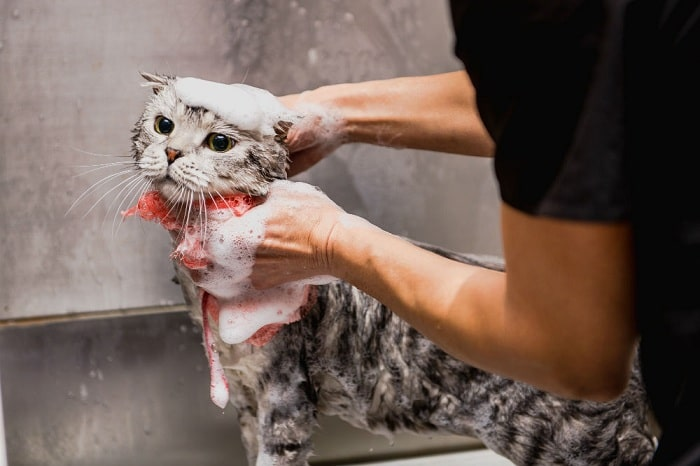

- Thấm ướt toàn bộ lông mèo mẹ từ từ, không nên dùng vòi nước lạnh xịt thẳng lên cơ thể sẽ khiến mèo bị hoảng và vùng vẫy.
- Không nên quá lợi dụng việc tắm cho mèo sắp sinh, không nên để mèo sắp sinh ngâm nước quá lâu.
- Trong quá trình tắm, tránh massage vùng bụng dưới của mèo.
- Nói chuyện và vuốt ve cho mèo khi tắm để khiến mèo an tâm và ngoan ngoãn hơn.Nên tắm bằng nước ấm cho mèo.
- Sau khi tắm xong, dùng khăn mềm lâu khô lông và sấy khô đến tận gốc để không mắc các bệnh lý liên quan đến da và nang lông.
- Ngoài ra bạn có thể bổ sung một số sản phẩm hỗ trợ làm sạch tai, răng, miệng để giúp mèo luôn sạch sẽ.
Cơ thể mèo trong giai đoạn này vô cùng nhạy cảm và cần được quan tâm nhiều hơn. Việc tắm của mèo cũng rất quan trọng, các sen nên lựa chọn loại sữa tắm và kết hợp gel dinh dưỡng để nâng cao sức khỏe của mèo mẹ và con. Hi vọng bài viết của MARRPET sẽ giúp ích cho bạn, chúc mèo nhà bạn mẹ tròn con vuông nhé.
Vì thế, bạn hãy chú ý cung cấp đủ nước và thức ăn cho chúng nhé. Nên chọn những loại thức ăn mềm để dễ nhai và dễ tiêu hoá hơn. Đồng thời tiếp tục bổ sung gel dinh dưỡng hoặc canxi, sắt cho cún để tăng sức khoẻ.